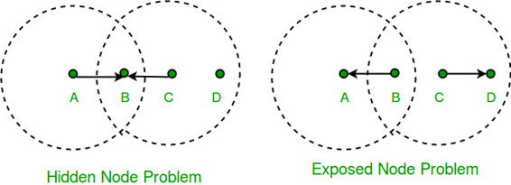

We take a close look at so called WiFi which is also known as IEEE standard 802.11

Consider the situation depicted in figure, where each of four nodes is able to send and receive signals that reach just the nodes to its immediate left and right.
For example, B can exchange frames with A and C but it cannot reach D, while C can reach B and D but not A. (A and D’s reach is not shown in the figure.) Suppose both A and C want to communicate with B and so they each send it a frame. A and C are unaware of each other since their signals do not carry that far. These two frames collide with each other at B, but unlike an Ethernet, neither A nor C is aware of this collision. A and C are said to be hidden nodes with respect to each other.
A related problem, called the exposed node problem, occurs under the following circumstances. Suppose B is sending to A in Figure. Node C is aware of this communication because it hears B’s transmission. It would be a mistake for C to conclude that it cannot transmit to anyone just because it can hear B’s transmission.
For example, suppose C wants to transmit to node D. This is not a problem since C’s transmission to D will not interfere with A’s ability to receive from B.
We address these problems by a algorithm known as Multiple access with Collision Avoidance (MACA). Sender and receiver exchange frames with each other before transmitting data.This informs all nearby nodes that a transmission is about to begin. Sender transmits Request to Send (RTS) frame to receiver . The receiver then replies with clear to send (CTS) frame back to the sender. Any node that receives CTS frame knows that it is close to receiver therefore cannot transmit a frame. Any node that receives RTS frame but not the CTS frame knows that is not close to receiver to interfere with it, So it is free to transmit data.
Reference –
Wikipedia